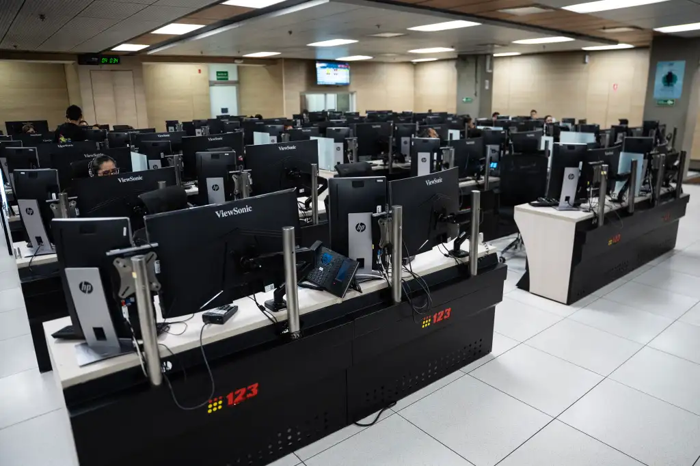
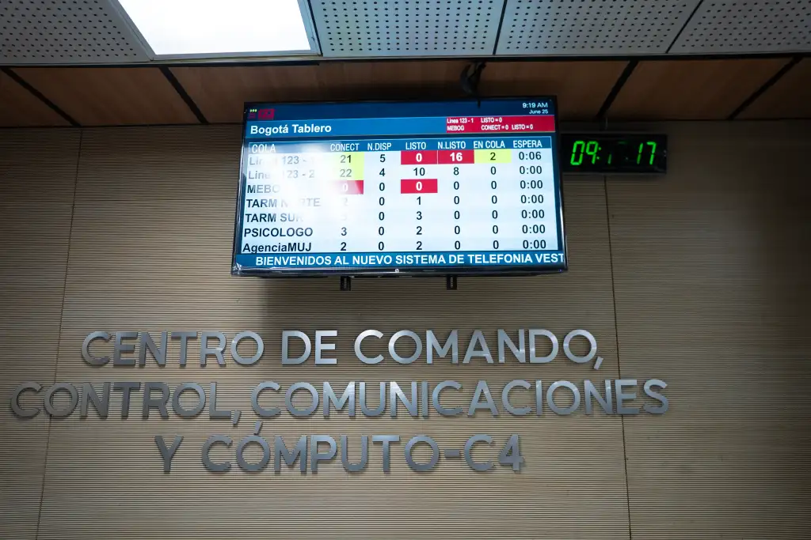
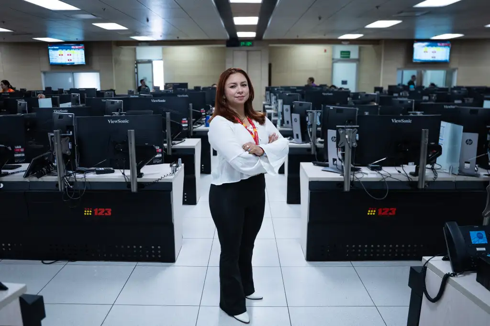

Familiarización con el sistema NUSE
¡Bienvenidos y bienvenidas al primer módulo de formación del programa Operador de Recepción! En este módulo realizarás lecturas y actividades que te permitirán aproximarte al Sistema NUSE, las actividades que desarrollarás y algunas recomendaciones sobre el uso de la información.
1. Objetivos
Las actividades buscan puedas:
- Identificar el contexto general y específico del sistema integrado de Seguridad y Emergencias NUSE 123 y el Centro de Comando, Control, Comunicaciones y Computo C4.
- Conocer las buenas prácticas sobre el manejo de la información que se recibe en las llamadas que ingresan a la Línea de Emergencia 123.
2. Temáticas Abordadas
De manera más específica, abordarás los siguientes temas y conceptos:
- Generalidades del C4 (C4, entidades que hacen parte, componentes, estructura organizacional,
- Acercamiento al sistema Nuse
- (Composición, turnos, roles y funciones, articulación operativa, conceptos y definiciones)
- Política de seguridad y privacidad de la información y cadena de custodia


3. Actividades
Antes de comenzar, ubícate en un lugar cómodo, vas a desarrollar varias lecturas. Consigue un cuaderno, lápiz o esfero, o alguna herramienta digital para tomar apuntes.
¡Comencemos!
3.1 Sistema NUSE
En Bogotá, el C4 es el Centro de Comando, Control, Comunicaciones y Cómputo, la plataforma tecnológica y operativa encargada de coordinar la seguridad, la convivencia y la atención de emergencias en la ciudad.
Como una entidad de la Secretaría Distrital de Seguridad, Convivencia y Justicia (SCJ), el C4 hace parte del Estado. Por tanto, las actividades de todas las personas que trabajamos para el C4 se orientan por un marco normativo.
Actividad 1. Conoce el marco institucional
Lee el Decreto 644 de 2025 de la Alcaldía Mayor de Bogotá, D. C.. Después, responde en tus apuntes:
- ¿Dentro de la estructura de la SCJ, dónde se encuentra el C4?
- En tus propias palabras, ¿cómo definirías el C4?
- ¿Cuáles son los objetivos del C4?
- ¿Cuáles son los componentes del C4?
- ¿Qué significa el acrónimo NUSE 123?
- Si tuvieras que explicarle a un niño de cinco años qué es, qué hace y qué entidades conforman el NUSE, ¿cómo lo harías?
¿Sabías que…?
La Secretaría Distrital de Seguridad, Convivencia y Justicia conmemoró su décimo aniversario en 2026. Mira el siguiente video para conocer al equipo de trabajo.
3.2. Sala Unificada de Recepción (S.U.R.)
La Sala Unificada de Recepción es el área dispuesta por la Línea 123 de Bogotá para la recepción y el trámite de incidentes de seguridad y emergencia de la ciudad.

Actividad 2. Identifica los roles de la S.U.R.
En la S.U.R. participan personas con diferentes roles:
- Jefe de Sala: controla, hace seguimiento y articula la operación de la S.U.R.
- Supervisión de Turno: apoya el seguimiento de la operación.
- Supervisión de Estación: apoya a los operadores de recepción en el desarrollo de su labor.
- Analista de Monitoreo: apoya el análisis de monitoreo y la calidad del servicio.
- Operador de Seguimiento: realiza seguimiento a incidentes de alto impacto.
- Operador de recepción: recibe las llamadas que ingresan a la Línea 123.
Pregunta de reflexión: ¿Cuál será tu rol dentro de la S.U.R. y qué responsabilidad implica atender las llamadas de emergencia de la ciudadanía?
3.3. Día a día en la S.U.R.
Como operador u operadora de recepción, atenderás las llamadas de emergencia de la ciudadanía. La Línea 123 de Bogotá funciona ininterrumpidamente, las 24 horas del día, los siete días de la semana.
Historias detrás de la Línea 123
Como operador u operadora de recepción, atenderás llamadas de emergencia de la ciudadanía. Este recurso relata una historia relacionada con la atención de la Línea 123.
Son millones de historias las que hay detrás de la atención de la #Línea123, como la de esta mujer que estuvo a punto de lanzarse de un edificio y a la que se le salvó la vida. ¿Qué pasó? ¿Cómo detrás de un teléfono se impidió una tragedia? 🎧 Escúchelo en #VocesDeLaCiudad, disponible en https://t.co/w2r0nQOCJs ¡En una emergencia cada segundo cuenta. Llamar en Bogotá al 123 salva vidas!
— Secretaría de Seguridad BOG (@SeguridadBOG) Ver publicación del 30 de agosto de 2026
Horarios de los turnos
Los turnos descritos en el material de formación son los siguientes:
| Turno | Horario |
|---|---|
| Primero | 5:30 - 11:44 |
| Segundo | 11:30 - 17:45 |
| Tercero | 17:30 - 21:45 |
| Cuarto | 21:30 - 5:45 |
Secuencia del ciclo de trabajo
| Día 1 | Día 2 | Día 3 | Día 4 | Día 5 |
|---|---|---|---|---|
| Turno cuarto | Turno tercero | Turno segundo | Turno primero | Descanso |
Los ciclos se definen al inicio de cada año. Una vez inicies tus actividades, conocerás los días y horarios en los que estarás en la S.U.R.
Actividad 3. Comprueba tu comprensión
Si tu ciclo inicia un martes, ¿en qué día de la semana estarás trabajando en el turno tercero?
Registra tu respuesta en tus apuntes.
3.4. Gestión de incidentes
Un incidente es una situación imprevista que está ocurriendo o que podría llegar a ocurrir y que pone en riesgo o afecta a las personas, sus bienes, el medio ambiente o los animales.
Como operador u operadora de recepción, escucharás y tramitarás incidentes reportados por la ciudadanía a través de la Línea 123. Cada incidente tiene condiciones particulares y ocurre en un lugar específico.
¿Qué está sucediendo?
Identifica la situación que está reportando la persona que llama.
¿Dónde está ocurriendo?
Identifica el lugar en el que se presenta la emergencia.
La gestión debe realizarse mediante las herramientas disponibles en la S.U.R. y siguiendo el protocolo establecido.
Actividad 4. Conoce el protocolo de recepción
Lee el documento institucional Operación de Recepción en la SUR. Luego, elabora en tus apuntes un diagrama que represente los pasos necesarios para gestionar un incidente.
Choque entre un vehículo particular y un bus de TransMilenio
Una persona llama para reportar una pelea entre el pasajero de un carro particular y el conductor de TransMilenio, después de un choque. El conductor del carro no puede salir del vehículo y presenta sangrado en la cabeza.
- En no más de una oración, describe qué está ocurriendo.
- ¿Qué entidades del NUSE deben atender este incidente?
Esta respuesta es temporal y no se envía ni se guarda en el servidor. Consérvala en tus apuntes.
Persona en crisis y riesgo de autolesión
Una mujer llama porque su hermano, quien tiene esquizofrenia, está muy agresivo. Tomó un cuchillo de la cocina, se encerró en una habitación y está gritando incoherencias. La mujer teme que pueda hacerse daño y solicita ayuda urgente.
- En no más de una oración, describe qué está ocurriendo.
- ¿Qué entidades del NUSE deben atender este incidente?
Esta respuesta es temporal y no se envía ni se guarda en el servidor. Consérvala en tus apuntes.
3.5. Seguridad y privacidad de la información
Durante la atención de llamadas de emergencia, conocerás información relacionada con las situaciones reportadas por la ciudadanía. Esta puede incluir nombres, números de teléfono y ubicaciones exactas.
La información que recibes y gestionas puede ser sensible y utilizarse en procesos judiciales. Por ello, su uso, manejo, tratamiento y administración deben atender los lineamientos establecidos por la Secretaría Distrital de Seguridad, Convivencia y Justicia para el componente NUSE 123 del Sistema C4.
Actividad 5. Consulta el manual institucional
Lee el Manual de Seguridad y Privacidad de la Información y elabora un mapa mental que sintetice sus principales contenidos.
Utiliza tu mapa mental para responder en tus apuntes:
- ¿Qué es un activo de información?
- ¿Cómo debo usar los dispositivos móviles?
4. Actividades de Trabajo Autónomo
Si llegaste hasta acá, has finalizado el módulo Familiarización con el sistema NUSE.
Envía por correo electrónico al Equipo de Capacitación todas las respuestas y actividades realizadas a la siguiente dirección:
equipocapacitacionc4@scj.gov.co
Utiliza como asunto: Modulo 1 – Nombres y apellidos
5. Evaluación
Evaluación del módulo
Para finalizar el módulo de Familiarización con el sistema NUSE, responde el formulario de evaluación. Esta actividad permite recoger tus respuestas y verificar los aprendizajes abordados durante la formación.
Formulario de evaluación
Busca un espacio tranquilo, lee cuidadosamente cada pregunta y responde el formulario.
Presentar evaluaciónEl formulario se abrirá en una nueva pestaña.